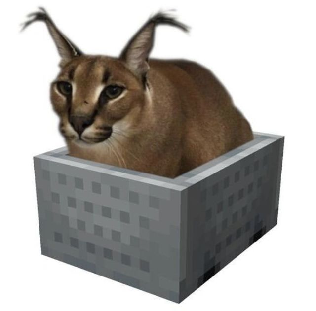

Добро пожаловать на ПРОСТО САЙТ
Здесь есть доклады для 5 класса (Можно брать, но указывайте авторство)
:::::::::::::::::::::::
О сайте
Этот сайт для моих проектов по Географии, Биологии, Истории и Физике 
:::::::::::::::::::::::
Контакты
Доклады
Почему луна влияет на приливы и отливы
"""""""""""""""""""""""
15 копеек 1962г
"""""""""""""""""""""""
Сэт
:::::::::::::::::::::::